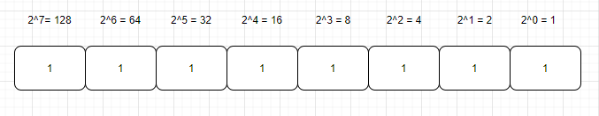
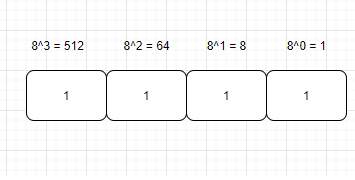

- 01 我应该站在谁的肩膀上 - OSI vs TCPIP模型.md.html
- 02 万丈高楼平地起- 物理层 + 数据链路层.md.html
- 03 OSI的灵魂就是我 - 网络层.md.html
- 04 要快还是要稳你说好了 - 传输层.md.html
- 05 是时候展现真正的技术了 - 应用层.md.html
- 06 重回小学课堂 - 二进制101.md.html
- 07 1+1 = 2吗？ - 二进制的计算.md.html
- 08 16进制又是个什么鬼？ - 16进制的讲解.md.html
- 09 我想有个家 - 什么是IP地址.md.html
- 10 我可是住二环的人 - IP地址的组成和分类.md.html
- 11 我已经没地方住了吗 - IPv6.md.html
- 12 向左还是向右 - IP路由.md.html
- 13 我能给你安全感 - TCP（一）.md.html
- 14 我那不为人知的秘密是什么 - TCP（二）.md.html
- 15 不问收没收到，就问快不快 - UDP.md.html
- 16 我为什么与众不同 - TCP高级篇（拥塞模型）.md.html
- 17 来，先看看我的家谱 - HTTP的身世.md.html
- 18 我都这么成功了，你却说我不行 - HTTP 的特点和缺点.md.html
- 19 我老了，让我儿子来吧 - HTTP2.md.html
- 20 稳重的大外甥 - HTTPS.md.html
- 21 HTTP的高级篇 - HTTPClient（Java）.md.html
- 22 想来我家，你自己查呀 - DNS.md.html
- 23 来的早，不如来得巧 - NAT.md.html
- 24 辛苦的邮政 - SMTP.md.html
- 25 你就是看不见我 - VPN.md.html
- 26 黑客的好帮手 - SSH.md.html
- 27 你可以得到我的心，却得不到我的人 - 物理安全设备.md.html
- 28 你怎么证明你就是你 - 身份验证和访问控制.md.html
- 29 我要怎么藏好我的考研资料 - 网络攻击（一）.md.html
- 30 我要怎么藏好我的考研资料 - 网络攻击（二）.md.html
- 31 如何保护我的考研资料 - 网络攻击防范.md.html
- 32 Linux网络安全 - 安全实战.md.html
- 33 结语.md.html
06 重回小学课堂 - 二进制101
我们今天开始进入新的一章-二进制。相信很多人知道二进制是0和1，但是具体的细节可能没有那么的清楚。如果你已经了解了，完全可以跳过这一章（虽然我还是建议你把这章好好看一下）。因为这一章本身就是为了温习一下基础知识。
现在就我们一起坐上这辆时光机器来重温一下曾经的学习。让我们进入二进制101的世界。正常计数时，我们以10为基数。我们通常不会去考虑规则，因为计数已成为我们生活中如此重要的一部分。大多数时候，我们使用的编号系统甚至没有怀疑或者注意过是什么规则，为什么只有从0-9。我们最有可能以10为底数，因为我们有10个手指。另一方面，二进制仅使用占位符的2个值（1或0）打开或关闭进行计数。因此，在十进制中，我们有10个值，从0到9。在二进制中，我们有2个值，0和1。上小学的第一天，老师就会让我们记住这些占位符以10的幂表示。我们从0开始计算那个占位符，然后我们最多计数1，2，3，4，5，6，7，8，和9。 当我们达到9时，我们用完所有值以填充此处的占位符。因此，我们必须添加另一个占位符，即十位数的占位符。然后我们可以再次开始算一个占位符，对吗？从1‑9、10一直到99，直到达到99，我们都用完了0到9的所有值，包括1和十位的占位符，因此我们必须添加另一个占位符。这次我们添加了百位的占位符。计数到999后，我们添加了另一个占位符，然后是一千，一万，再来是十万，然后是几百万，一千万，依此类推。因此，由于手指上有10个手指，我们采用这种方式进行计数，然后就演变为这种十进制计数系统。（知道为什么外星文明比我们先进吗，因为手指多。）
我们先来看一下为什么需要学习二进制呢？
二进制为什么重要？
- 二进制是编程的基础，但这与逻辑有更多关系，而不仅仅是数据存储。
- 布尔逻辑只有两个真值，“ true”或“ false”。布尔逻辑是计算机的基础。
- 在诸如信息论或安全性之类的更高级的CS学科中，从理论上讲，这与数据存储甚至数字系统无关，而与实际的二进制数学有关。
- 此外，如果你正在计算机上打字或对文本进行任何操作，那么你正在处理字符集。作为程序员，你必须了解某些有关字符集的知识。了解这些内容需要掌握使用位和字节存储数据的知识，以及可以在其中存储多少信息（256个不同的字节），这可以追溯到信息论。最后也涉及到数据存储。
- 不会二进制，不要奢望可以真正的理解IP，不信，你就跳过这章，直接看第三部分IP。
- 还有一点就是，二进制的运算是最快的，这也是面试的时候，会问到的点。我就问你，你想不想学吧。
二级制怎么转换成十进制呢

我们先来看一下这个，我有一个二进制数是1100 0000，其实它的每一位占位符依次是（128位，64位，32位，16位，8位，4位，2位，1位）。相信你已经看明白了，每一个占位符是上一位的占位数字乘以2。1乘以2就是2，2乘以2就是4，4乘以2就是8，8乘以2就是16.。。。以此类推。那怎么转换成10进制的数呢，就是通过占位符的数字来乘以那个位数的值也就是0或者1，比如这个例子是1100 0000，所以加起来就是128*1 + 64 * 1 + 32 * 0 + 16 * 0 + 8 * 0 + 4 * 0 + 2 * 0 + 1 * 0 = 192。 让我们再来试另一个数比如 0011 1010，那怎么计算呢 128 * 0 + 64 * 0 + 32 * 1 + 16 * 1 + 8 * 1 + 4 * 0 + 2 * 1 + 1 * 0 = 32 + 16 + 8 + 2 = 58。你自己可以多算几遍，相信你一定会掌握的。
十进制怎么转换成二级制呢

我相信你已经掌握了二进制到十进制，那反过来怎么算呢。让我们来算一下208。我们还可以用8位占位符（128位，64位，32位，16位，8位，4位，2位，1位）。从左面第一位也就是128位开始208-128是不是能得到一个正数呢，如果答案是yes的话，那你就可以在这位放一个1。然后208-128就剩80了。80减去64是不是也是一个正数呢。答案是yes，所以64位也是1，现在还剩80-64 = 16，16减去32是正数吗，不是，所以是0，16减去16是正数吗，答案是0。所以也可以放一个1，因为已经到0了，所以就不需要继续计算了，所以答案就是1101 0000，让我们来验证一下这个答案。128*1 + 64 * 1 + 32 * 0 + 16 * 1 + 8 * 0 + 4 * 0 + 2 * 0 + 1 * 0 = 208。这个是不是我们验证的那个十进制的数呢。答案是yes。让我们再来做一个测试，这回试一下47，从左面第一位也就是128位开始47-128是不是能得到一个正数呢，如果答案是no，那你就可以在这位放一个0。然后看下一位47 - 64 是正数吗？答案是no，所以这位也是0，再继续看，47-32是正数吗，答案是yes，所以这位是1，剩下的数是15，然后15 - 16 不是正数，所以是0，接下来的几位你就自己推算一下，所以答案是不是0010 1111，再让我们检查一下 128 * 0 + 64 * 0 + 32 * 1 + 16 * 0 + 8 * 1 + 4 * 1 + 2 * 1 + 1 * 1 = 47。
八进制
我们已经掌握了二进制，那现在就让我们来看一下8进制。八进制也被叫做Octal。其实原理都是一样的，这就是举一反三的时候，十进制是逢十进一，二进制是逢二进一，那8进制不用我说你也知道了吧。就是逢八进一。所以8进制的数就是0到7。你这时候可能会有疑问，二进制用在IP地址上，那8进制有什么用呢？
八进制广泛应用于计算机系统，比如ICL 1900和IBM大型机使用12位、24位或36位（是不是感觉无穷无尽，会不会有三进制，七进制，哈哈）。八进制是这些基础，因为他们的最理想的二进制字缩写大小能被3整除(每个八进制数字代表三个二进制数字)这里你可以想到了吧，所有的基础还是二进制，这也是为什么二进制是最重要和最基础的。四、八到十二个数字可以简明地显示整个机器。它也降低成本使得数字允许通过数码管，显示器，和计算器用于操作员控制台，他们在二进制显示使用过于复杂，然而十进制显示需要复杂的硬件，十六进制显示需要显示更多的数字。
然而,所有现代计算平台使用16 - 32位，或者64位，如果使用64位，将进一步划分为八位字节。这种系统三个八进制数字就能满足每字节需要，与最重要的八进制数字代表两个二进制数字(+ 1为下一个字节,如果有的话)。16位字的八进制表示需要6位数,但最重要的八进制数字代表(通过)只有一个(0或1)。这表示无法提供容易阅读的字节，因为它是在4位八进制数字。
因此，今天十六进制为更常用的编程语言，因为两个十六进制数字完全指定一个字节。一些平台的2的幂，字的大小还有指令更容易理解。现代无处不在的x86体系架构也属于这一类，但八进制很少使用这个架构，尽管某些属性的操作码的二进制编码变得更加显而易见。（我们在后面会讲解16进制）
八级制怎么转换成十进制呢

其实这个和二进制转成十进制是同一个原理。如果你在上面可以理解的很清楚了，那这里也没有什么难题，这又不是rocket science，right？好，让我来举一个简单的例子，我现在给你一个8进制的数12，那转成十进制是多少呢？让我们从最暴力的解法开始，就是穷举法。因为从8进制有0-7个数，所以从1 到 7 是没有区别的，然后当数值为8的时候，是不是8进制没有可以表示的东西。那是不是就要进一位了，所以八进制里面的10就是十进制的8，然后11就是9，12就是10，对不对。这种方法可以理解吗。如果我们用计算的方式来做，那是不是第一位是个位占位符，第二位是8位占位，第三位就是8的平方也就是64占位符以此类推。然后我来看一下这个例子12 = 1 * 8 + 2 * 1 = 10。这是不是我们穷举出来的结果。
我们再来仔细看一下这个占位符，不要嫌弃我啰嗦呀，都是为了让你可以更清楚，我们说的第一个占位符是1，第二个是8，第三个是64。我希望你能掌握规律，你仔细想一下第一个是不是8的0次方也就是1，第二个占位符就是8的1次方就是1，第三个也就是8的2次方也就是8*8 = 64。然后以此类推。
十进制怎么转换成八级制呢
好，那让我们来反过来看一下，十进制怎么转成8进制呢，道理同样相同，让我们来看一下这个例子54，54 小于64所以肯定不需要64占位符，现在看一下下一个占位符，54除以8 是不是等于6余数是6.所以8位占位符就是6，然后剩下的6除以1占位符。所以这个数值就是66。反过来验证一下。66 = 6 * 8 + 6 = 54。我现在如果让你写7进制或者6进制，你会写吗？其实原理都是互通的对不对？
当然这就是这节课索要包含的知识，也就是基础中的基础，但是看似简单，如果你没有学过，其实还是有一点点的小绕，相信我，这些知识就是我在读研究生的时候，都是每一节信号和通信相关的课程的第一课，你可以看出来它的重要性了吧。